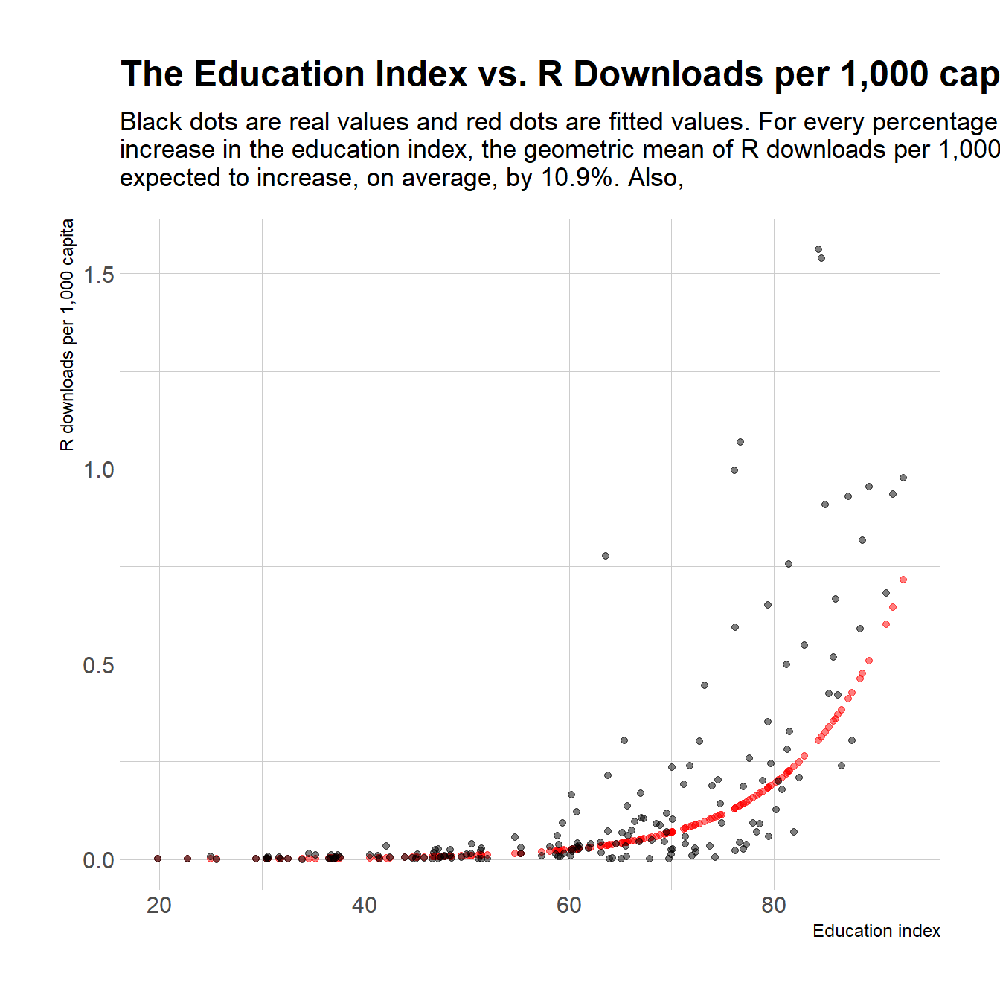

1 Summary
To see the all the code used in this post, visit my GitHub repository for this site
- Objectives: To understand what factors contribute to R downloads per 1,000 capita.
- Challenge: Interpretation of log-linear coefficients.
- Data points: 11,806,912
- Language: R
2 Question
In a previous post I had looked at which countries downloaded R the most. That led me to ask which countries were the most intense R users, using downloads per 1,000 capita as a proxy.
When I was writing the conclusions about the most R-using countries, I tried to draw up patterns. What did those R-using countries have in common? They were mostly “developed” countries. Since developed countries tend to have high levels of academic attainment, I decided to explore the relationship between education levels and R-usage across the globe:
How does the education index relate to R downloads per 1,000 capita?
To answer my question, I identified a metric that would allow me to explore the relationship between education and R usage. That metric turned out to be the UN’s education index, which I will explain below.
3 Dataset description
I used the Tidy Tuesday dataset for R downloads posted on 30th October 2018. The dataset contained 938,115 observations and eight features corresponding to a unique id, download date, time, size, version, os, country, and IP id. The downloads correspond to a year’s worth of downloads running from 2017-10-20 to 2018-10-20. To prevent any overlap and have one entire year, I limited downloads to 2018-10-19. After I removed missing values, there were 910,351 observations.
For the independent variable, I downloaded the education index for all countries. The education index is a metric published by the United Nations and it corresponds to the average of the Mean Years of Schooling Index (MYSI) and the Expected Years of Schooling Index (EYSI):
\[EI={\frac {{\textrm {MYSI}}+{\textrm {EYSI}}}{2}}\]
4 The relationship between the education index and R downloads
Figure 4.1: When I plotted the education index vs. R downloads per 1,000 capita, I noticed exponential behaviour in the y-axis. Since I planned to use a linear regression, I took the logarithm of the response variable. The figure shows that by taking the logarithm of R downloads per 1,000 capita, we have met the criteria for a linear regression.
The relationship between the two variables is linear now - time for a linear regression!
That will take the form:
\[ln(downloads\space per \space 1,000 \space capita)=\beta_0+\beta_1*Education\space index + \varepsilon\]
The F-statistic will be testing:
\[ H_0: \beta_1=0\] \[ H_A: \beta_1\neq 0\]
| term | estimate | std.error | statistic | p.value |
|---|---|---|---|---|
| (Intercept) | -9.9203 | 0.3805 | -26.07 | 0 |
| edu_index_percent | 0.1034 | 0.0059 | 17.47 | 0 |
After checking out the residuals, I saw there are a few outliers, mainly Turkmenistan, Tajikistan, Libya, Burkina Faso, and Chad. I decided to leave them in because it’s interesting to think about what specific characteristcs contribute to them being be under or over the trend line. The model I proposed, explains 64.41 of the variation in the data. It’s not a lot but it’s also not insignificant. After having tried to fit a multiple linear regression model with other variables such as GDP and life expectancy, I found the education index to be the best predictor of R downloads per 1,000 capita.
5 Results
Based on the model:
\(ln(downloads\space per \space 1,000 \space capita)=-9.9203 +0.1034*Education\space index + \varepsilon\)
and the F-Statistic with p-value 0, we can reject \(H_0\) and say that there is a relationship between the education index and R Downloads per 1,000 capita.
The education index explains 64.41 percent of the variation in R Downloads per 1,000 capita around the world.
The geometric mean of R downloads per 1,000 capita is 0.
A one unit increase in the education index, is expected to increase on average, R downloads per 1,000 capita by a factor of 1.109:
\[log(Education\space index\space +1) - log(Education\space index)=0.1034\]
\[log({\frac{Education\space index\space +1}{Education\space index}})=0.1034\]
\[e^{log({\frac{Education\space index\space +1}{Education\space index}})}=e^{0.1034}\] \[\frac{Education\space index\space +1}{Education\space index}=1.109\]
The corresponding confidence interval is:
\[\mathbb{P} (e^{lower\space bound}<\frac{Education\space index\space +1}{Education\space index}<e^{upper\space bound})=0.95\] The lower bound is \(point\space estimate-2*SE=0.1034-2*0.0059=0.0916\) and the upper bound is \(point\space estimate+2*SE=0.1034+2*0.0059=0.1152\)
\[\mathbb{P} (e^{0.0916}<\frac{Education\space index\space +1}{Education\space index}<e^{0.1152})=0.95\] \[\mathbb{P}(1.096<\frac{Education\space index\space +1}{Education\space index}<1.122)=0.95\]
We can see this increase by plotting the fitted values:

6 Conclusion
In this blog post, I set out to explain the relationship between the education index and R downloads per 1,000 capita across the globe. To do this, I identified an education based metric for all countries. I then regressed R downloads per 1,000 capita onto the education index. I found that the education index (values from 2016) explains about 64.41 of variation in R downloads per 1,000 capita. There were several outliers including Turkmenistan, Tajikistan, Libya, Burkina Faso, and Chad.